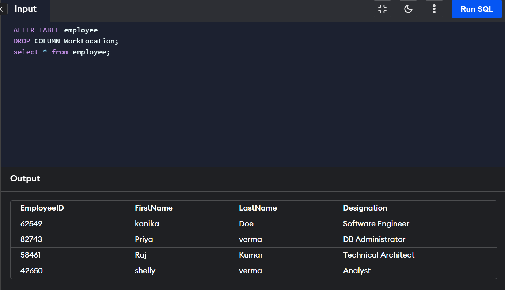
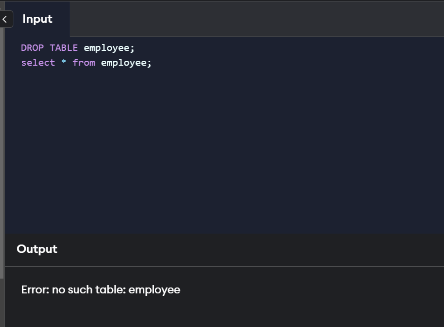

Drop command
The Drop command in SQL not only deletes a table but also deletes other entities such as database, column,
index, constraint, etc. For example, the DROP COLUMN command deletes the specified column from the table,
and the DROP DATABASE command deletes the specified database and all of its information.
SQL's drop command is a DDL (Data Definition Language) command. DDL commands are used to create or alter
the structure of the database objects such as a table, column, etc. For example, CREATE TABLE is a DDL
command used to create the table with the given columns. Objects deleted using the Drop command are lost
permanently and cannot be rolled back.
The syntax for the Drop commands varies for different database providers such as MySql, Oracle, SQL Server,
etc. We follow the Oracle SQL syntax throughout this article for simplicity.
Syntax Of Drop Command In SQL
Below are the various possible ways to use the DROP command to delete different types of database entities.
DROP DATABASE
The DROP DATABASE command is used to delete the entire database. When a database is deleted, all the tables,
indexes, constraints, etc., present in it will be deleted. All the data stored in the database will be deleted.
The syntax for dropping a database is
DROP DATABASE(database_name)
database_name - The name of the database to be deleted.
DROP TABLE
The DROP TABLE command is used to delete the specified table and the data stored.
The syntax for
dropping a table is
DROP TABLE (table_name)
table_name - The name of the table to be deleted.

